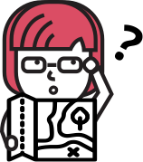

Setting the KPIs
Sydney had a vision for VenturX.
She knew that without growth of her user base, VenturX would eventually die down.
Sydney hoped to increase the sign up conversion rate from 4% to 50%.
Evaluating the Original KPIs
With my team, we discovered that 4% refers to about 1.5 persons per week.
Although 1.5 persons is not a lot, a 4% conversion rate is above average.
What KPI that will maximize impact for VenturX?
To answer this, we spent time testing the
existing website for insight on the user.
The Existing Website
Hypothesis
Users are confused about what VenturX is;
the landing page does not provide enough information.
Testing of Current Website
To test our hypothesis, we tested the existing website to find user pain-points, and where they were dropping off.
Users were confused about what VenturX was.
"Is it a website analytics tool?"
"I am not sure what the dashboard metrics are measuring."

Users experienced the following pain-points:
- Content lacked in quantity and clarity
- Visuals were not relevant to the content
- Call to action (CTA) buttons were not placed conveniently
- The demo video added confusion—users not sure how the tool works
- Who is the audience? Entrepreneurs? Incubators? Accelerators?
New KPIs
Since there were only around 10 website visitors per week, we found
that increasing user acquisition would be most beneficial for VenturX, even if
the conversion rate of 4% remains constant.
However, we hoped to increase conversion rate in the long run by providing
valuable content that would cause users to return and eventually sign-up.
- Educate and convince users to join VenturX
- Create a fun and enjoyable experience on the website